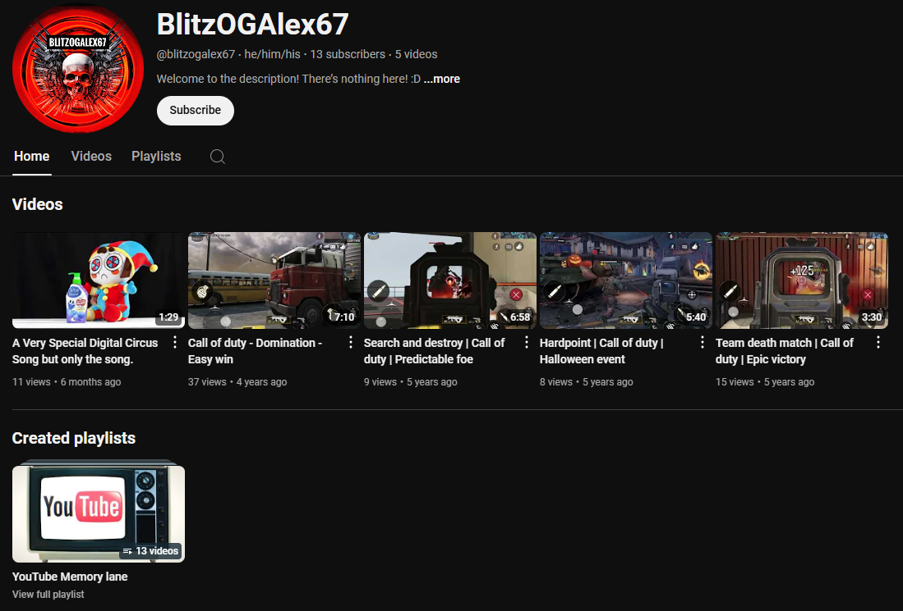
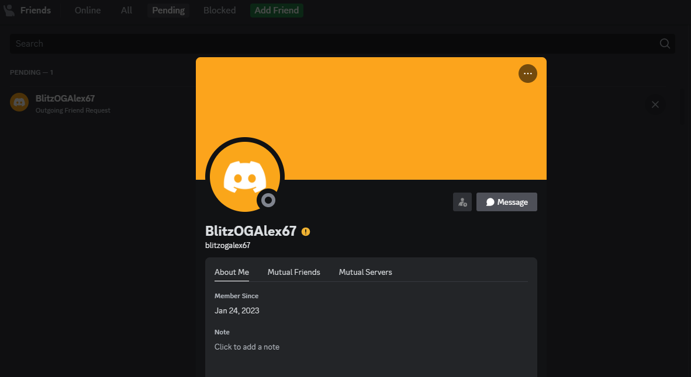

I believe 2018 is where I first heard about Discord with a clip of horror gaming YouTuber LuigiKid promoting his server. The first impression was weird, "Skype but better" could mean anything.
And so began my experience with Discord at 10.
What better place else than the first one? LuigiKid's server might've been your average place for underage folks and angry moderators. If I remember correctly, there was a neat little self promotions channel that would become important in the future. But for now let's go on what I had in his server.
Actually, there isn't much I can remember outside of that one time where I pissed off a moderator with a Pokèmon Ditto profile picture. And then I saw the same picture on Twitter in a video where LuigiKid reads 'roast' comments, I was probably infuriated.
Now let's go on to the self promotion channel. I should also mention that Five Nights at Freddy's was something that was a shared interest there, and it was one of the topics of the first small server I joined.
Tyman is, or was an owner of a FNAF-themed server, basic really. But I remember one time I roleplayed as Freddy and I tried to send a jumpscare GIF and it got blocked. That might've been the first time I got caught by bot moderation of any kind.
Who the hell puts a link blocker in a small server? Anyway, what was more important was this server's #self-promotion channel.
It led to a special server owned by 'Tortlandia', someone who I later realized was a child. Interesting person, made up his own language, had a country ball thing going on, and was in a group of Discord servers called...
The Alliance was a Discord server that contained a group of server owners and a handful of members. All server owners had their server 'protected' by The Alliance...via having a pasted text in a channel. It went something like "This server is protected by The Council ⚜️" and ended with a Discord invite link, possibly to enlarge the owner's own server.
The owner? BlitzOGAlex67, a handful of a username. He was very serious about this entire...thing. I even saw he played those war battle games when I asked him to go on Roblox. With this information it is not surprising that he is a raider himself, a 'strategic' one if you will.
A weird alliance I must say, they even had enemies. "Killer64" was a name that sounded like a Nintendo YouTuber, but it was actually someone who raided the place. On the first few days I was warned of this ominous Killer64 and a few other folks I don't remember.
I then applied to The Council with my little bots-only server. It got accepted and I was now one of them. I'll skip a few months and go on about my contributions to The Council, such as:
I made Discord bots! You don't think so? You're right.
These bots were run by an Android app called Discord Bot Creator, it provided bot hosting. Yeah, an Android app with server hosting. It was terrible, had like 1 hour of uptime via watching one advertisement.
These bots I made would go on and off throughout the day and would rarely be used. But no worries, I have another thing I could do!
You don't know how badly I want to show one of the drawings I made. I was crazy with the Sony Sketch app. Not crazy in a good way though, I used Sketch to create at most basic designs for server icons.
Most people in The Council (private server club of The Alliance) were most
likely underage to be on Discord, like I was. I can't remember much apart from
an incident with Tortlandia, but I specifically recall when I was upset
I
Would
Send
Out
Messages
Like
This
Speaking of random things...
So, one of the server had a media bot. This media bot had access to an...NSFW API. And this server had an #nsfw channel. See where this is going? This child went total ham on that bot. And when he did I wasn't aware that he was a child.
Tortlandia had a YouTube channel and on it there was a video that showed his face, looked younger than I was at the time! I did try researching his username only to find out that there are only 2 videos from 2018.
Blitz made a server that was a market that had used real money. I remember nothing else other than I made the server' icon in Sketch.
I should mention that my username in most of these memories was "Mr. Dog" and had a profile picture of a cartoon dog from a Minecraft trolling animation, the dog was also edited in Sketch to have derpy eyes and better feet. And at one time, someone sent a picture of a male dog's REDACTED in #general and pinged me.
I would like to remind you that this was when I was likely 11.
Which leads me to another thing with Mr. Dog from what I can remember. I direct messaged Tyman and he was saying something about how I looked like a furry because of the profile picture and I immediatley changed it to a music player icon. He was surprised and retrospectively seemed a bit shocked in a bad way.
I would also like to mention that I had staff permissions on most servers owned by Blitz. One time he made an @everyone ping and it kinda made me a little mad, nothing crazy or anything. I changed the server name to Council of The Pings. (original name being Council of The Alliance)
This got my permissions removed because Blitz thought I was hacked and I then had to explain to one of the memebers that I was not hacked.
Blitz was a war roleplay guy for sure, and when I told him about Quackity and his game raids. He then asked if I could recruit him for his army. I was sure he wasn't going to respond and he didn't but I still messaged him on Twitter, I bet that looked embarrasing.
All of this talk about raiding made me want to try it, and set a precedent for me screwing around with people on Discord with a bunch of alternative accounts. I would even go on my main account to act like I was shocked.
I think I was the one who ended up banning the fake raider, in hopes that The Alliance would trust me more. I doubt it did though, because I messed up some times with switching profiles.
This computer I am on right now was orignally at my grandma's house and was used to have two Discord clients (stable and public test build) to have two accounts side by side.
One time, I made a document in Microsoft Word explaining what I did and sent it to him, he was wondering who sent it (i was under Kimbrezen at the time) and I chickened out and said I was one of his enemies.
I don't recall what went down but one day I just stopped interacting.
It's been almost 5 years since this mess of a server and since 2020 I have been thinking about where these people are now. There are some names I remember, so I gave them some searches to see if I could find them again.
What a direct name, I instantly found a Twitter account and a YouTube channel. The Twit-actually, let's not. I checked his YouTube channel and saw something haunting.
Digital Circus...he still used YouTube and he still kept uploading with his original username. I wanted to leave a comment but I don't think he would like it. Aside from that, there was a NewGrounds profile, results from a certain hub, and a Reddit account.
Just in case.
Was not as active as Blitz was, but he account was still there. Missing the video of his real face, probably deleted.
A familar username that I saw while in The Counil but rarely interacted with.
Almost forgot the name of this person, my only time played Mario Kart 7 on the original Nintendo Network was on one of his live streams.
Heh, I remember when he made a sub count stream and I made duplicate Google accounts just to get the number up, and then someone would unsubscribe.
I did want to reconnect with these people but we are probably so different now it wouldm't be worth it. These people were quite the amazing first impression of Discord communites and the platform as a whole.